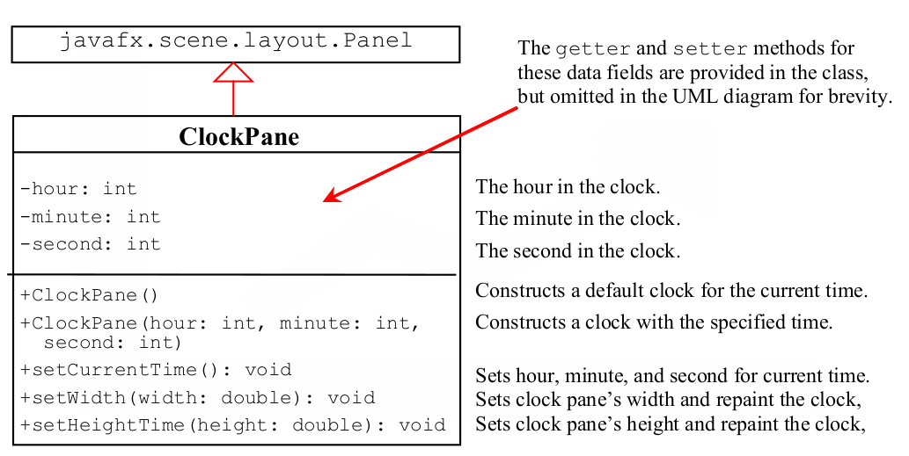

Lab 12 - The ClockPane Class (Week 15)
Table of Contents
Section 60L: Due Friday, Dec 8th / Section 02L: Due Sunday, Dec 10th
Overview
In this lab, you will design a driver class that displays a clock on a pane defined by ClockPane class as shown in the UML diagram below. Implement a DisplayClock class to show the clock, with the current time displayed as text below the clock.

Figure 1: The ClockPane Class UML Diagram
Submission
Include your Lab12 class file, and submit this file with a screenshot of the execution result to Blackboard.